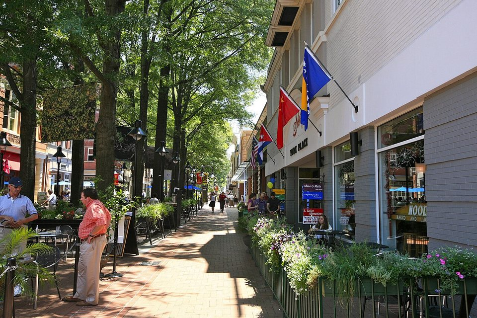

Country estate · Splurge
Keswick Hall
A luxury estate hotel in the countryside east of town, with fine dining, a bar, golf and grounds made for a romantic stroll.
Official details for Keswick HallWine country, with Jefferson for company.
Rolling vineyards under the Blue Ridge, Thomas Jefferson’s Monticello and university, and a lively pedestrian Downtown Mall. Charlottesville is a weekend of long lunches, tastings and country drives.

Time illustration: direct distance at 150 KTAS plus 15 minutes for departure and arrival, matching the discovery page. The Blue Ridge lies just west of the field; check mountain weather and terrain on your route. Use ForeFlight for your actual flight plan.
KCHO, Charlottesville-Albemarle Airport, is a towered field about 15 minutes north of town.
Signature is the FBO. The number shown is its listed FBO line; the airport’s general number is 434-973-8342. Ask about 100LL pricing, facility fees, two-night parking, waivers with fuel and after-hours access. No live price is shown.
Three different stays: a country estate, a resort with a spa and an inn near the university.
A luxury estate hotel in the countryside east of town, with fine dining, a bar, golf and grounds made for a romantic stroll.
Official details for Keswick HallA resort near the university with a spa, golf course and several restaurants. Easy for a spa-and-wine weekend.
Official details for Boar’s Head ResortA well-reviewed boutique inn near the university and the Rotunda, close to restaurants. Choose it if you want to be in town.
Official details for Oakhurst InnA romantic historic manor on about 100 acres outside town, with fine dining and a quiet country setting.
Official details for The CliftonA polished, newer boutique hotel beside the University of Virginia, with a restaurant and bar. Choose it to stay in town, close to dinner.
Website & map for Kimpton The Forum HotelCharlottesville’s best tables fill quickly on weekends. Reserve dinners ahead.
A small, atmospheric restaurant and bar on Second Street off the Downtown Mall. An easy, romantic first night.
Official details for The Alley LightA popular date-night spot that fills up fast. Reserve well ahead.
Official details for Oakhart SocialA warm, intimate long-time favorite near the Downtown Mall with a varied menu. Or have lunch at a winery.
Official details for C&O RestaurantMix one history stop with wine and a country drive.
Thomas Jefferson’s mountaintop home and gardens, just outside town. Book timed tickets ahead and allow at least half a day.
Tickets & toursJefferson’s Academical Village and the Rotunda, a UNESCO World Heritage Site with Monticello. Lovely for a walk.
A tree-lined brick pedestrian street with shops, galleries, cafés and outdoor tables. The heart of the evening.
Downtown Mall guideSkyline Drive and the Blue Ridge Parkway meet about 30 minutes west, with overlooks and fall color. Check road status.
Boar’s Head Resort and Keswick Hall both have spas. A couples treatment pairs well with an afternoon of tastings.
Booking: Ask about couples treatments, access for non-hotel guests, current pricing and cancellation policy. No prices are shown here, and no appointment has been booked.
Boar’s Head spa · Keswick Hall spaCharlottesville’s wine country has dozens of wineries. Pick two or three a day and leave room for a long lunch.
One of Virginia’s most historic wineries, with the ruins of a Jefferson-designed mansion on the grounds and a restaurant. About 40 minutes northeast.
Official details for Barboursville VineyardsA popular Crozet winery with Blue Ridge views, known for polo on summer Sundays. Check tasting reservations and the polo schedule.
Official details for King Family VineyardsA large estate just south of Monticello, best known for its sparkling wines, with a hilltop tasting room and wide views of the Blue Ridge foothills. Check tasting reservations on weekends.
Official details for Trump WineryThis prototype links to the destination calendar. It does not yet match events to your travel dates.
Steeplechase races in the countryside, a Charlottesville social tradition. Book lodging early.
Peak season for vineyards and the mountains. Expect full tasting rooms and higher hotel rates.
Football games and graduation fill hotels quickly. Check the university calendar before you book.
Check the destination calendar when choosing a weekend, and confirm dates and tickets with the organizer.
A sample Friday–Sunday weekend: Monticello, a winery day and two dinners. No bookings or availability confirmed.
Land at KCHO early and pick up a car.
Monticello with a timed entry, then lunch at a nearby winery.
A stroll on the Downtown Mall, then back to the airport. Leave tastings to the passenger.
Land at KCHO, subject to weather and your actual flight plan, and pick up the car.
Lunch at C&O, then a walk on the Downtown Mall and through UVA’s Academical Village.
Dinner at The Alley Light.
Monticello with timed entry.
Two winery tastings, perhaps King Family and one more on the trail, with a designated driver.
Dinner at Oakhart Social.
Spa time at your resort, or a short drive toward the Blue Ridge.
Return the car and allow time at the FBO.
Let weather and your flight plan set the departure.
Drive to Skyline Drive or the Blue Ridge Parkway for overlooks.
Barboursville Vineyards and its Jefferson-designed ruins, with lunch at the winery.
A relaxed dinner at your estate hotel.
These details make the difference between an appealing list and a usable getaway.
Lodging and car first, then Monticello tickets, dinners and winery tastings.
Plan tastings well away from flying, and use a driver or tour on tasting days.
Fall is peak; spring is lovely. Summer afternoons can bring storms over the mountains.
Rates, tastings and restaurant hours are date-dependent. No availability or live price is implied here.
Picks and links reviewed by WingAway Weekends. Hours, prices, menus and availability change often, so confirm directly with each place before booking. Spotted something out of date, or have a favorite we missed? Email us at hello@wingawayweekends.com.
WingAway Weekends helps you discover the destination. Use ForeFlight and current official aviation information for route, performance, weather, NOTAMs and preflight decisions. Flight planning and PIC responsibility stay with the pilot.